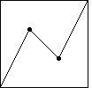
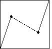

|
Recall the generator for
Brownian motion has turning points (4/9,2/3) and (5/9,1/3).
A small departure from Brownian motion is the generator with turning points
(1/3,2/3) and (5/9,1/3). Here
is an example. |
 |
Next we consider the generator with turning points
(2/9,2/3) and (5/9,1/3). Here
is an example. As expected, the departures from Brownian motion are even more pronounced. |
|  |
Next we consider the
symmetric generator with turning points
(1/3,2/3) and (2/3,1/3). Here
is an example. |
|  |
Finally, we consider the
symmetric generator with turning points
(2/9,2/3) and (7/9,1/3). Here
is an example. |
|